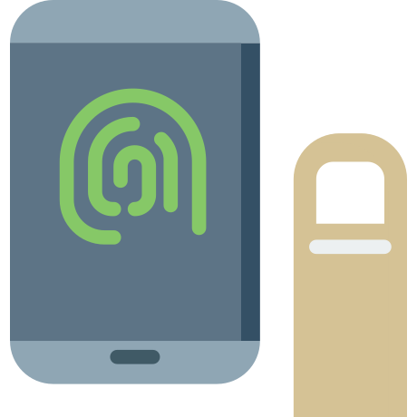

امـنـیـت رایـانـه
برای فعالان مدنی و روزنامهنگاران
{ امنیت واتساَپ }
ایرانسک
IranSecurity
IranSec
IranSec2
این محتوا با و تحت گواهی منتشر میشود (بیشتر بخوانید)
امنیت واتساَپ
مروری بر مهمترین تنظیمات امنیتی
تابستان ۱۴۰۲چند نکتۀ مهم واتساَپی
- واتساَپ از رمزگذاری نقطه-به-نقطه بهصورت پیشفرض استفاده میکند. این شیوهٔ رمزگذاری در چت گروهی نیز اعمال شدهاست. بر اساس گزارشهایی اما این رمزگذاری قابل شکستن است (پیوند خبر).
- واتساَپ متعلق به شرکت فیسبوک است و بهصورت پیشفرض اطلاعات شما را با این شرکت به اشتراک میگذارد. هر چند که در برخی کشورها مثل اعضای اتحادیهٔ اروپا این امر غیر قانونی است. (پیوند خبر).
بررسی دسترسیها به
واتساَپ
بهطور مرتب صفحۀ Linked Devices را بررسی کنید. با انتخاب دستگاههای متصل غیر آشنا و گزینه Log out، دسترسی آن را قطع کنید.
تنظیم اعلانهای امنیتی
واتساَپ

وارد Settings شوید. از قسمت Account گزینۀ Security notifications را انتخاب کرده و آن را فعال کنید.
تنظیم ورود دو مرحلهای
واتساَپ
یکی از شیوههای هک شناسۀ واتساَپ، همچون تلگرام، دسترسی به آن از طریق
دستگاه دیگری است که به آن استفاده از
WhatsApp Web
میگویند. تفاوت عمدۀ این شیوه با تلگرام در این است که در هنگام اتصال باید
به گوشی تلفن دسترسی فیزیکی داشت. امکان فعالسازی بدون اسکن کردن کد
QR
نیز وجود ندارد.
برای جلوگیری از دسترسی غیرمجاز
(در صورتی که بر اثر غلفت، شخص دیگری به گوشی
دسترسی داشته است)
باید تایید دو مرحلهای
(Two-Step Verification)
را فعال کرد.
وارد Settings شوید. از قسمت Account گزینه Two-step verification را انتخاب کنید. یک رمز عددی شش رقمی برای آن انتخاب کرده و در مرحلۀ بعد آن را تکرار کنید.
نکتهای درمورد بازیابی رمز ورود دومرحلهای
- برای بازیابی رمز درصورت فراموشی، این امکان وجود دارد که از ایمیل استفاده کنید.
- میتوانید از این مرحله عبور کنید اما توجه داشته باشید که درصورت فراموشی رمز، هیچ راهی برای بازیابی آن وجود نخواهد داشت.
- باتوجه به اینکه استفاده از ایمیل شخصی برای این کار چندان امن نیست، توصیه میشود اکانت جدیدی (ایمیل فیک) در گوشی یک فرد امن ساخته و از آن استفاده کنید.
- ایمیلتان را وارد کنید. کد تأیید بلافاصله به ایمیل ارسال میشود. کد را وارد کنید. رمز ورود دو-مرحلهای فعال شدهاست.
پاک کردن حساب کاربری
واتساَپ
وارد Settings شوید. از قسمت Account گزینه Delete my account را انتخاب کنید. شماره موبایلتان را وارد کنید و Delete my account را بزنید تا حساب کاربری شما پاک شود.
حذف کلی پیامها در
واتساَپ
وارد Settings شوید. از قسمت Chats گزینۀ Chat history را انتخاب کنید. Clear all chats محتوای همۀ گفتوگوهایتان را پاک میکند.
نیاز به کمک دارید؟
پرسشهای خود را با ما در میان بگذارید. support@iransec.org t.me/IranSec_Botحق مؤلف و تشکر
این نوشته بهواسطه تجربۀ چندساله در ارائه مشاورۀ امنیتی به سازمانها، کنشگران مدنی، روزنامهنگاران و شهروندان تهیه شده است. هرچند که تمام تلاشمان را کردهایم که متن حاضر بهروز و بینقص باشد، اما امکان ایراد وجود دارد. پس با آغوش باز پذیرای نقدها و پیشنهادها شما هستیم. لازم است یادآوری کنیم که این جزوهی امنیتی با گواهی کریتو کامنز (قابل استفادهی غیرتجاری، تخصیص و سهم یکسان) منتشر شده است. به حتم برای هر شکل از استفادهی تجاری از این مجموعه نیاز به کسب اجازه است.
در این پروژۀ آموزشی از محتوای دیگران با گواهی قابلانتشار و تغییر استفاده شده است. از آن جمله میتوان به ارائهگر reveal.js، قلمهای لالهزار و وزیر و بی-یکان، شکلکهای ion و awesome و flat icons استفاده شده. در هر جای پروژه که عکسی استفاده شده منبع آن ذکر شده است. اگر منبعی از قلم افتاده است خوشحال میشویم که آن را گوشزد کنید.